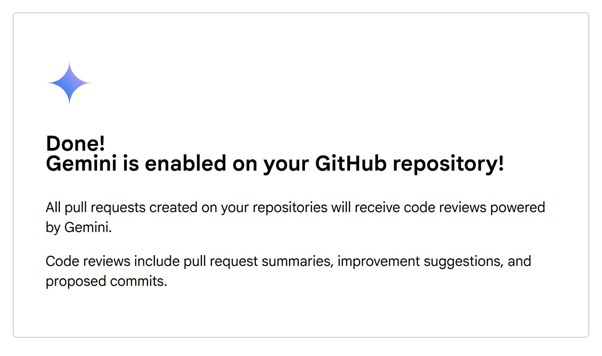

גוגל יוצאת נגד GitHub Copilot? זה בדיוק מה שקרה עכשיו 🤖
פורסם במקור ב LinkedIn
גוגל יוצאת נגד GitHub Copilot? זה בדיוק מה שקרה עכשיו 🤖
גוגל השיקה את Gemini Code Assist, כלי AI חדש לפיתוח קוד, במהלך שעשוי לשנות את חוקי המשחק למפתחים.
👀 שימו לב לנתון הזה:
הגרסה החינמית של Gemini Code Assist מספקת פי 90 יותר השלמות קוד בחודש מהגרסה החינמית של GitHub Copilot.
מדובר ב-180,000 השלמות קוד לעומת 2,000 בלבד.
🧐 ולא מדובר רק בכמות – מדובר באיכות:
הכלי מבוסס על Gemini 2.0, מסייע בכתיבת קוד, שיפור קטעי קוד קיימים ומתן הסברים - וכל זה בתוך סביבת הפיתוח שאתם כבר עובדים בה -
הוא תומך ב-Visual Studio Code, IntelliJ, PyCharm ועוד, ואפילו מתחבר ל-GitHub בצורה חלקה.
🚀 איך מתקינים?
1️⃣ נכנסים לאתר codeassist.google
2️⃣ בוחרים את ה-IDE שבו אתם משתמשים (VS Code, JetBrains וכו’)
3️⃣ מתקינים את התוסף
4️⃣ מתחילים לקבל השלמות קוד חכמות בצ'אט או אוטומטית בתוך הקוד
🔍 אז מה המשמעות?
למפתחים עצמאיים – קפיצה משמעותית באפשרויות בלי לשלם.
לחברות - עדיין יצטרכו לשלם עבור פיצ'רים מתקדמים כמו מדדי פרודוקטיביות ואינטגרציה ל-Google Cloud.
לתעשייה - זה מהלך ישיר נגד Copilot של מיקרוסופט ו-GitHub.
בקצב שבו יוצאות יכולות חדשות וכלים חדשים התעשיה הולכת ונהיית עמוסה ורווייה והאתגר של המפתחים בלימוד הכלים והבחירה הנכונה הולך ונהיה מאתגר.
האם גוגל תוכל לנצח בקרב על ה-AI בקוד? או שזה עוד מקרה קלאסי של איחור הרכבת, כשהתעשיה כבר אימצה כלי פיתוח מבוססי AI כמו Cursor ו-WindSurf
מה אתם חושבים?
האם אתם הולכים לנסות את Gemini Code Assist, או ש-Copilot ו-Cursor מספיקים לכם? 🚀🔥
